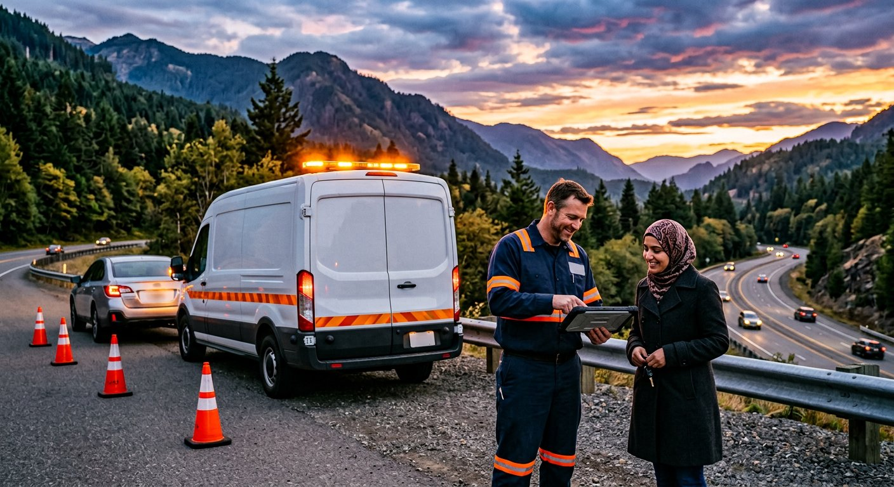
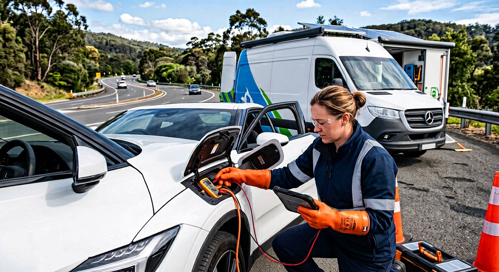

سامانه هوشمند «اورژانس خودرو»؛
استاندارد نوین شفافیت، ایمنی و دیسپچ امداد جادهای
پلتفرم یکپارچه ارتباط رانندگان در راه مانده با شبکه امدادگران احراز صلاحیتشده؛ با راهاندازی متمرکز فاز اول در استان قزوین و معماری مهندسی آماده گسترش کنترلشده به سراسر کشور. (نام پیشنهادی انگلیسی: Auto Emergency — غیرثبتشده بهعنوان علامت تجاری).

چرا بازار سنتی امداد خودرو نیازمند بازطراحی بنیادین است؟
خرابی خودرو در آزادراهها و شهرهای صنعتی تجربهای پراسترس است که در مدل سنتی با ۴ چالش ساختاری برای راننده و ناوگان همراه است:
ابهام تعرفه و شوک قیمتی
اعلام قیمتهای سلیقهای کنار جاده، سردرگمی ریال و تومان، و نبود پیشفاکتور شفاف پیش از اعزام یدککش.
ناوگان عبوری فاقد احراز صلاحیت
آسیب به گیربکس اتوماتیک یا باتری ولتاژ بالای خودروهای برقی و هیبریدی به دلیل اعزام خودروبر نامتناسب.
سردرگمی مکانی و ETA غیرواقعی
دشواری توضیح آدرس دقیق در بزرگراه و وعدههای زمانی غیرواقعی در زمان شلوغی شیفتها.
فقدان فاکتور رسمی و مرجع داوری
پرداختهای کارتبهکارت شخصی بدون کد رهگیری، فاکتور معتبر بیمه/گارانتی و نبود سازوکار ثبت شکایت.
| محور مقایسه | وضعیت سنتی / تماس تلفنی پراکنده | راهکار پیادهسازیشده در «اورژانس خودرو» |
|---|---|---|
| تعیین قیمت | توافقی و شفاهی پس از حضور در محل | پیشفاکتور سیستمی به تومان صحیح پیش از ثبت درخواست + قفل افزایش بالای ۱۰٪ بدون تأیید مشتری |
| احراز صلاحیت امدادگر | نامشخص برای راننده متوقف در جاده | قفل سختافزاری آنلاینشدن در سرور تا تأیید مدارک، پلاک ناوگان و گواهی ولتاژ بالا (EV) توسط مدیر ارشد |
| تکمیل ظرفیت ناوگان | انتظار طولانی بدون اطلاعرسانی صادقانه | عدم نمایش ETA ساختگی؛ ارجاع خودکار پرونده به میز فرماندهی اپراتور جهت هماهنگی دستی |
| حریم خصوصی راننده | پخش شماره تماس شخصی بین چندین راننده عبوری | مخفی ماندن تلفن و آدرس دقیق تا پذیرش قطعی و سانسور خودکار مجدد بلافاصله پس از پایان مأموریت |
نحوه کار «اورژانس خودرو» از لحظه توقف خودرو تا صدور فاکتور و تسویه شبا
روی هر یک از ۸ گام عملیاتی زیر کلیک کنید (یا دکمه پخش خودکار را بزنید) تا تصویر صحنه، رابط موبایل کاربر/امدادگر و رخداد دقیق پشتصحنه سرور را همزمان مشاهده نمایید:
عملکرد واقعی دیسپچ، حرکت GPS و قوانین گارد سرور را زنده اجرا کنید
یکی از ۴ سناریوی واقعی زیر را انتخاب کرده و گامبهگام اجرا کنید تا حرکت واحد امدادی روی نقشه قزوین، رفتار ماشین وضعیت و ثبت تراکنش کیف پول (یا مسدودسازی استان غیرفعال) را ببینید:
چرا «استان قزوین» بهترین نقطه شروع استراتژیک در کشور است؟
بهجای پراکندگی سرمایه در دهها شهر بدون ناوگان کافی، فاز اول با تمرکز ۱۰۰٪ روی استان قزوین آغاز شده و زیرساخت گسترش مرحلهای در دیتابیس تعبیه گردیده است:
۱. چهارراه ترانزیتی شمال و غرب کشور
تلاقی آزادراههای پرتردد قزوین-کرج، قزوین-زنجان، قزوین-رشت و محور بوئینزهرا با تقاضای مستمر شبانهروزی امداد جادهای.
۲. قطب صنعتی البرز، لیا و کاسپین
حضور هزاران واحد تولیدی و تردد روزانه دهها هزار خودروی سواری و خدماتی با پتانسیل قراردادهای سازمانی B2B.
۳. حاکمیت سختگیرانه فعالسازی استانها
وجود استان در دیتابیس بهمعنی فعال بودن نیست؛ فعالسازی البرز یا زنجان منوط به جذب حداقل ناوگان تأییدشده و مصوبه ممیزیشده مدیر کل است.
پوشش کامل ۱۵ خدمت امدادی با تمایز ویژه در خودروهای وارداتی و برقی (EV)
با رشد ورود خودروهای برقی و هیبریدی به جادههای ایران، «اورژانس خودرو» از روز نخست گواهی ایمنی ولتاژ بالا (HV) را در موتور دیسپچ خود اجباری کرده است:

جریان درآمدی پایدار با حذف ۱۰۰٪ خطای تبدیل ریال و تومان
پلتفرم ۱۵٪ کمیسیون شفاف از اجرت خالص خدمت دریافت میکند و ۱۰۰٪ بهای قطعات مصرفی تأییدشده را بدون کسر کمیسیون به امدادگر بازمیگرداند تا انگیزه گرانفروشی قطعه از بین برود:
مدل اقتصادی شفاف، نقطه سربهسر و شبیهساز درآمدی استان قزوین
فرضیات عملیاتی زیر را تغییر دهید تا نقطه سربهسر (Break-Even)، گردش مالی کل (GMV)، درآمد کمیسیون پلتفرم و پرداختی به شبکه امدادگران قزوین بهصورت زنده محاسبه شود:
اکوسیستم ۴ نقش کاربری با کنترل دسترسی سختگیرانه در لایه سرور
هیچ قانون امنیتی صرفاً با مخفی کردن دکمه در رابط کاربری رها نشده است؛ تمامی مجوزها و مالکیت رکوردها در
سرور بررسی و در security_events ثبت میشوند:
ثبت سریع و پایش شفاف
مدیریت خودروها، ثبت درخواست روی نقشه قزوین، ردیابی زنده امدادگر، تأیید تغییر قیمت، پرداخت، فاکتور چاپی و ثبت تیکت.
ناوگان احراز صلاحیتشده
ارسال مدارک و گواهی EV، قفل آنلاینشدن تا تأیید مدیر، پذیرش اتمیک مأموریت، ارسال GPS، گزارش فنی و تسویه شبای ۲۴ رقمی.
مرکز فرماندهی ۲۴/۷ قزوین
مدیریت صف زنده، تخصیص دستی موارد بدون امدادگر آزاد، ثبت مهلت پرداخت اضطراری جاده و یادداشتهای داخلی محرمانه.
حاکمیت کلان و مالی
داشبورد KPI، تأیید/تعلیق ناوگان، تنظیم تعرفه و تخفیف، مصوبه فعالسازی استانها، بازپرداخت بانکی و ممیزی امنیتی.
حریم خصوصی مکانی پویا
پيش از پذیرش مأموریت، امدادگر فقط محدوده کلی را میبیند و پس از تکمیل مأموریت نیز شماره تلفن و آدرس دقیق مشتری مجدداً سانسور میشود.
رمزنگاری و مخزن خصوصی فایل
گذرواژه با scrypt و توکن نشست با SHA-256 هش میشوند. تصاویر در storage/private/ خارج از وب عمومی نگهداری میشوند.
یادداشت محرمانه و ضد IDOR
یادداشتهای بازرسی اپراتور در جدول مجزای internal_operator_notes ذخیره شده و هرگز در API مشتری نشت نمیکنند.
دارایی نرمافزاری تحویلشده: ۱۶ ماژول دامنه، ۳۵ جدول ACID و ۰ آسیبپذیری
معماری Modular Monolith تایپاسکریپتی با مهاجرتهای برگشتپذیر (up/down)،
بکاپ آنلاین VACUUM INTO، جریان بلادرنگ SSE و آداپتورهای استاندارد زرینپال و کاوهنگار:
نقشه راه ۴ فازی از تثبیت عملیات قزوین تا مقیاس ملی ۳۱ استان
رشد مرحلهای مبتنی بر آمادگی واقعی ناوگان و زیرساخت داده، بدون تعهدات پوششی انجامناشدنی:
هسته کامل محصول و آمادهسازی ۷ زون استان قزوین
پیادهسازی کامل ۱۶ دامنه، ۳۵ جدول، کاتالوگ ۱۵ خدمت، پنلهای ۴ نقش، استریم SSE، ضدتکرار پرداخت/درخواست، ۱۵ تست خودکار سرتاسری و پایپلاین CI/CD.
بهرهبرداری تجاری پایلوت در استان قزوین
اتصال کلیدهای تجاری درگاه بانکی (زرینپال/شاپرک) و پنل پیامک (کاوهنگار)، جذب ۲۵ تا ۳۵ واحد امدادی تأییدشده در قزوین، الوند، تاکستان و آبیک و استقرار شیفت ۲۴/۷ مرکز پیام.
گسترش کنترلشده به کریدور البرز، زنجان و گیلان
فعالسازی تکبهتک استانهای همجوار از طریق پنل Super Admin پس از احراز حداقل ناوگان بومی و عقد قراردادهای سازمانی B2B با شهرکهای صنعتی و بیمهها.
کلاستر چندسروره ملی (PostgreSQL + PostGIS + Redis)
مهاجرت لایه داده از SQLite WAL تکسروره به کلاستر توزیعشده PostgreSQL + PostGIS، گذرگاه Redis Pub/Sub برای SSE چندنودی و اپلیکیشن بومی آفلاینمحور امدادگران جادهای.
پاسخ مهندسی به ریسکهای عملیاتی و شفافیت الزامات حقوقی ایران
سامانه «اورژانس خودرو» برای شرایط واقعی جادههای ایران و اختلالات احتمالی شبکه طراحی شده است:
ریسک کندی اینترنت در آزادراه
مجهز به Idempotency-Key ضد ثبت تکراری، امکان ورود دستی نشانی در صورت خطای GPS و ثبت تلفنی توسط اپراتور مرکز پیام قزوین.
ریسک اختلال موقت درگاه بانکی
پشتیبانی از وضعیت رسمی بدهی مجاز اضطراری (approved_debt) با تأیید اپراتور تا راننده در شب یا سرما در جاده معطل نماند.
شفافیت حالت آزمایشی (Sandbox)
بدون تنظیم کلیدهای واقعی درگاه و پیامک در .env، سامانه صادقانه برچسب آزمایشی نشان میدهد و در حالت Production بدون کلید واقعی بالا نمیآید.